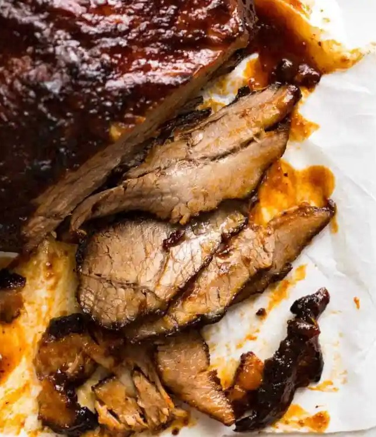

Brisket

A cut of beef that needs to be cooked slowly to break down the connective tissues.
The unique thing about this cut of beef is that it can be slow cooked so it’s fork tender, yet is still sliceable.
It also has a better beefy flavour compared to other slow cooking beef cuts like chuck.
- 1.5 - 2 kg / 3 - 4 lb beef brisket
- 1 tbsp olive oil
Rub:
- 1 tbsp brown sugar
- 2 tsp paprika powder
- 1 tsp onion powder
- 1 tsp garlic powder
- 1/2 tsp cumin powder
- 3/4 tsp mustard powder
- 1 tsp salt
- 1/2 tsp black pepper
BBQ Sauce:
- 2 garlic cloves , minced
- 1/2 cup / 125 ml apple cider vinegar
- 1 1/2 cups / 375 ml ketchup
- 1/2 cup / 110g brown sugar , packed
- 2 tsp EACH black pepper, onion powder, mustard powder
- 1 tsp cayenne pepper (adjust to taste re: spiciness)
- 1 tbsp Worcestershire sauce
- Mix Rub ingredients. Rub all over brisket. If time permits, leave for 30 minutes – 24 hours in the fridge, but I rarely do this.
- Combine BBQ Sauce ingredients in a slow cooker. Mix then add the brisket – squish it in if needed.
- Slow cook in slow cooker for 8 hours (1.5 kg / 3 lb) to 10 hours (2 kg / 4 lb).
- Remove brisket onto a tray.
- Pour liquid in slow cooker into a saucepan. Bring to simmer over medium high heat and reduce until it thickens to a syrup consistency (it thickens more as it cools).
- Meanwhile, drizzle brisket with oil then roast in a 200C/390F oven for 15 minutes until brown spots appear.
Remove then baste generously with Sauce, then return to oven for 5 minutes.
Remove and baste again, then return to oven for 5 – 10 minutes until it caramelises and looks like the photos.
- TO SERVE: Slice brisket thinly across the grain and serve with remaining BBQ Sauce.
This is terrific served as a meal with sides or piled high onto rolls with Coleslaw as sliders.
Return to main page